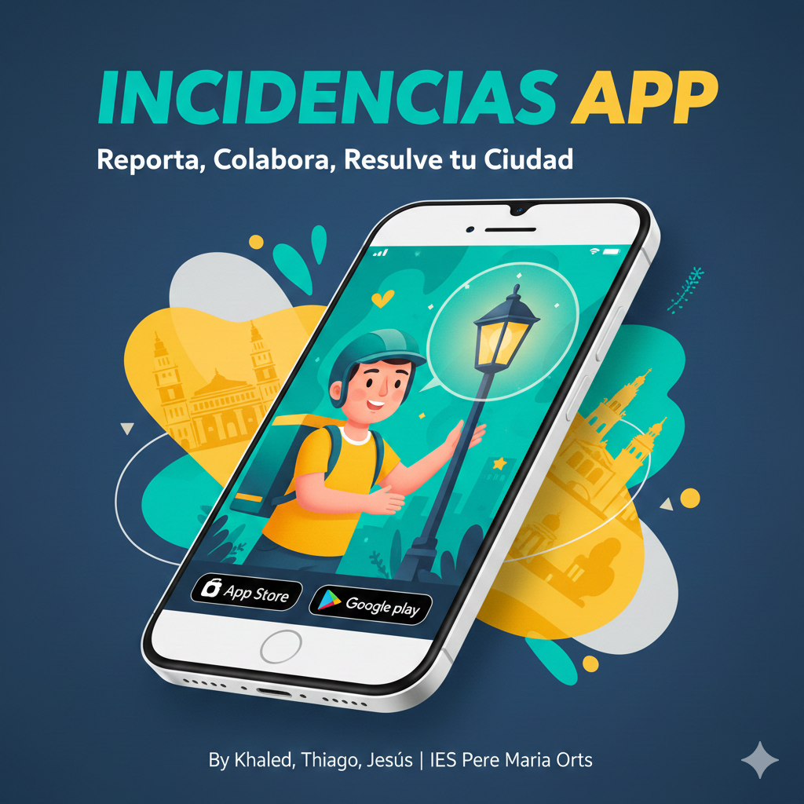

Reporta incidencias en tu zona o ayuda a resolverlas. Una app pensada para conectar personas con soluciones reales.

Un proyecto creado por Khaled, Thiago y Jesús para facilitar la ayuda técnica y comunitaria de forma rápida y organizada.
Las incidencias se organizan por zonas para llegar a quien realmente puede ayudar.
Colaboradores especializados en distintas categorías.
Gana valoraciones, logros y recompensas por ayudar.
Baches, alumbrado, mobiliario urbano.
Redes, ordenadores y soporte técnico.
Parques, calles y espacios públicos.
Alertas y avisos preventivos.
Disponible próximamente para móvil. Reporta o ayuda desde cualquier lugar.